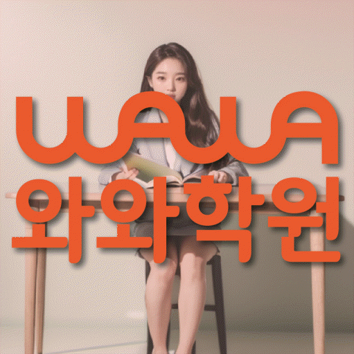

명일점 · 현재 과목 진도와 누적 오답
명일동 고2 수학학원
새 단원의 진도를 따라가면서 이전 개념에서 다시 막힌다면 두 과제를 따로 기록해 보세요. 이 안내는 고2 학생의 실제 과목·시험 범위와 누적 오답을 함께 정리하기 위한 상담 준비 자료입니다.
CENTER INFORMATION
명일점 기본정보와 수강 조건
등록 학원명과 등록번호
명일점와와학습코칭학원
서울강동교육지원청 등록 제 7641호
방문 주소와 상담 지점
서울 강동구 양재대로 1606 3층
명일동 안내에 연결되는 실제 지점은 명일점입니다. 동네마다 별도의 학원이 등록되어 있다는 의미는 아닙니다.
명일점 전체 안내 주소로 길찾기운영시간과 학생 시간표
평일 오후 2시 이후
주말 정규 수업은 운영하지 않습니다.
운영시간 참고 안내와 학생의 실제 수업 시간표는 다릅니다. 희망 과목과 요일을 함께 전달해 주세요.
과목별 수강 조건
자료에서 확인한 수학 수강 학년: 고2.
수강 가능한 학년과 현재 모집 중인 반은 다를 수 있습니다.
교육비 적용 조건과 확인 자료
TUITION GUIDE
교육비와 수업 구성
아래 금액은 지역 공통 참고표이며 명일점의 확정 교습비가 아닙니다. 실제 신청 과목과 횟수, 교재·추가 프로그램 비용을 구분해 상담하세요.
지역 공통 참고: 서울 (1회 90~100분, 단위: 원)
| 횟수 | 초등 | 중등 | 고등 |
|---|---|---|---|
| 주 3회 | 249,000 | 266,000 | 299,000 |
| 주 4회 | 319,000 | 341,000 | 384,000 |
| 주 5회 | 389,000 | 416,000 | 469,000 |
등록 전에는 현재 게시된 교습비와 최종 결제 금액을 확인해 주세요. 안내표만으로 모든 과목의 합산 비용이나 교재비 포함 여부를 판단하지 않습니다.
고2는 학년보다 현재 과목과 시험 범위부터 확인
학교에서 공부하는 과목명과 진도표를 준비하세요. 대수·미적분Ⅰ·확률과 통계 등 교육과정의 과목명이 있어도 각 학교의 학기별 편성이나 명일점의 실제 수업 범위를 이 안내만으로 확정할 수는 없습니다.
현재 진도에서 새로 배운 내용
교과서 과목명, 시험 범위의 시작·끝 단원과 학교 프린트를 적으세요. 처음 배우는 정의나 풀이 방법 때문에 막혔는지 확인할 수 있도록 대표 문항을 골라 보세요.
풀이 중 다시 필요한 이전 개념
새 단원을 풀다가 식의 변형이나 함수 해석에서 멈췄다면 해당 계산·해석 단계에 표시하세요. 과목 전체를 다시 공부하기 전에 현재 문항에 필요한 기초를 구분해 볼 수 있습니다.
시간 때문에 끝내지 못한 문항
풀 수 없었던 문항과 시간이 부족해 넘긴 문항을 나눠 기록하세요. 풀이를 몰랐던 문제와 계산이 길어진 문제에 같은 보완 계획을 적용하지 않도록 상담 자료를 준비합니다.
누적 오답 기록: 정답 수정과 재풀이를 구분
노트에는 문항 번호만 쌓기보다 다시 확인할 행동이 보이도록 적어 보세요. 아래는 사용할 수 있는 기록 항목이며 센터의 실제 관리 방식은 상담에서 확인해야 합니다.
첫 풀이: 어디에서 멈췄는지
문제 조건을 놓쳤는지, 개념을 선택하지 못했는지, 계산에서 틀렸는지 적으세요. 힌트를 받은 뒤의 풀이와 구분해 남겨야 혼자 시작할 수 있는 범위를 확인할 수 있습니다.
보완: 필요한 이전 개념 한 가지
해설 전체를 옮기기보다 틀린 단계에 필요한 정의나 식의 변형을 적으세요. 다음 복습에서 그 내용을 직접 설명하고 대표 문항에 적용할 수 있는지 확인합니다.
재확인: 날짜·도움·소요 시간
다시 푼 날짜, 도움을 받았는지와 걸린 시간을 남기세요. 정답만 기억했는지 확인하려면 조건이나 표현이 달라진 문항에서도 같은 원리를 적용하는지 살펴보세요.
시험 범위 공부와 누적 개념 보완을 함께 계획
다음은 계획을 비교하기 위한 가상 상황입니다. 실제 수업 일정이나 학생 성과를 소개하는 사례가 아닙니다.
학교의 새 단원 과제를 하다가 이전 단원의 식 변형에서 반복해서 막힌 학생을 생각해 보세요. 계획에는 이번 시험 범위의 대표 문항과 그 문항에서 필요한 식 변형 연습을 서로 다른 항목으로 적을 수 있습니다.
하교 후 등원과 다른 과목 일정을 먼저 적고 실제 복습 시간을 확인하세요. 현재 시험 범위와 누적 보완의 분량은 재풀이 결과를 보고 조정할 질문으로 남기되, 고정된 진도나 성과를 미리 약속한 계획으로 판단하지 않습니다.
상담 뒤에는 현재 과목·단원, 반복해서 막힌 단계, 먼저 확인할 활동과 다음 점검 날짜가 분명한지 비교해 보세요. 교재를 얼마나 끝냈는지와 학생이 도움 없이 다시 풀었는지는 따로 확인할 항목입니다.
명일동 학교 자료와 통학 준비
초등학교 참고 목록
서울고명초등학교 · 서울대명초등학교 · 서울명원초등학교
중학교 참고 목록
명일중학교 · 배재중학교 · 천호중학교
고등학교 참고 목록
강동고등학교 · 광문고등학교 · 명일여자고등학교
학교 목록은 지역 상담 참고 정보입니다. 제휴나 재원생 여부, 해당 학교 대비반 운영을 뜻하지 않습니다. 사용하는 교재와 실제 평가 범위는 학교 자료로 확인하세요.
명일동 고2 수학학원 자주 묻는 질문
명일점의 고2 수학 수강 대상은 확인됐나요?
센터 자료에서 고2 수학이 확인됩니다. 다만 현재 모집 여부와 학교에서 공부하는 구체적인 과목의 수업 가능 범위, 희망 요일·시간은 상담에서 확인해야 합니다.
고2 수학 상담에 과목명과 학교 진도표가 필요한 이유는 무엇인가요?
같은 고2라도 실제 과목과 학기별 진도는 학교 자료로 확인해야 하기 때문입니다. 교과서 과목명, 시험 범위표와 프린트를 준비하면 현재 진도와 필요한 이전 개념을 구분해 상담할 수 있습니다.
오답노트에서 무엇을 비교하면 좋나요?
첫 풀이에서 멈춘 단계, 필요한 이전 개념, 도움 없이 다시 푼 결과와 소요 시간을 비교하세요. 해설을 보고 답을 수정한 기록과 혼자 재풀이한 기록은 구분해서 남기는 것이 좋습니다.
새 단원 진도와 이전 개념 보완은 어떻게 함께 정리하나요?
현재 시험 범위의 대표 문항과 그 문항에 필요한 기초 연습을 별도 항목으로 적어 보세요. 학생의 실제 복습 시간과 재풀이 결과를 준비해 어느 항목부터 확인할지 상담에서 구체적으로 물어보세요.
주말 수업과 고2 수학 비용은 어떻게 확인하나요?
현재 센터 자료에는 주말 정규 수업을 운영하지 않는 것으로 안내되어 있습니다. 평일 실제 수업 시간표와 모집 여부는 문의해 주세요. 교육비 표는 지역 공통 참고값이므로 명일점 교습비 자료에서 과목·횟수·시간과 추가 비용을 별도로 확인해야 합니다.



내용 확인·수정: 2026-09-30 · 코칭센터 편집
센터 기본정보는 제공된 2026-09-21 확인 자료를 기준으로 안내합니다.